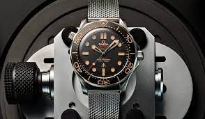

Amazon said Thursday it’s postponing a return to the office for its corporate employees to January of 2022. Previously, Amazon had said it expected most of its employees to begin returning regularly to the office the week of Sept. 7 of this year. Several companies have adjusted their return-to-work plans amid a rise in Covid-19 cases due to the highly contagious delta variant. view more...

Born of quarantine cooking and making ends meet, 2020 found more and more people familiarizing themselves with the ingredients they already had on hand. With the luxury of restaurant meals and well-stocked grocery shelves in limbo, people learned how to shop their pantries and transform overlooked canned and dry goods into filling, delicious meals. This money- and food-saving skill will undoubtedly continue as a food trend in 2021. Need some more culinary inspiration? Check out an in-person cooking class near you, or drop in virtually to a live online cooking class from home. view more...
Health experts say there are three main ways that pandemics end The first is that a virus can be eradicated. The only disease that has been wiped out in humans is smallpox. A combination of factors — a very effective vaccine, people could be vaccinated after they were exposed to the disease, and it was easy to tell when someone had the disease — made eradication possible, said Dr. Catherine Troisi, an infectious disease epidemiologist at UTHealth School of Public Health. People shouldn’t count on the elimination of COVID-19, though the fact that the virus “seems to be exclusive to humans” does make eradication a possibility, said Dr. John Carlo, CEO of Prism Health North Texas and a member of the Texas Medical Association’s COVID-19 task force. “Through an aggressive vaccination campaign, we actually could eradicate it and completely shut it off,” he said. The second way a pandemic can end is that a virus becomes what’s known as endemic. Endemic viruses, like influenza, are always present and circulating but don’t cause public health emergencies. “Just like we see with flu, people still get sick, people die, but we don’t change our routines,” Troisi said. view more...